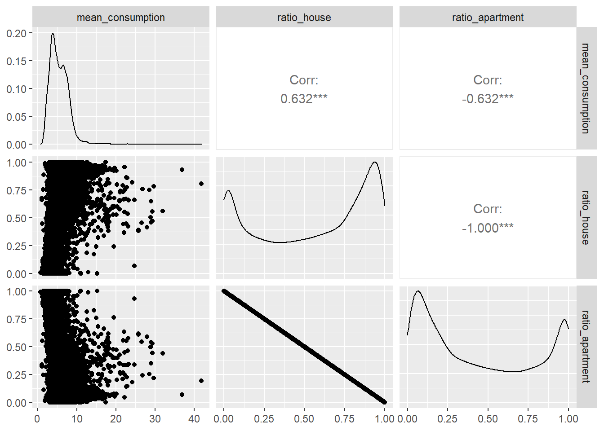
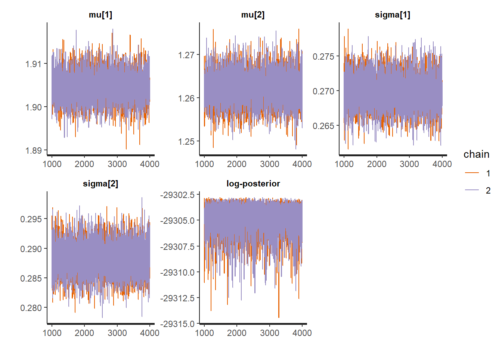
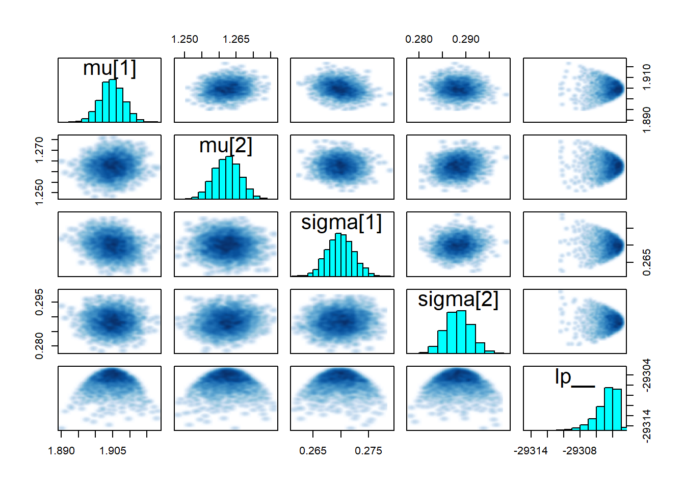
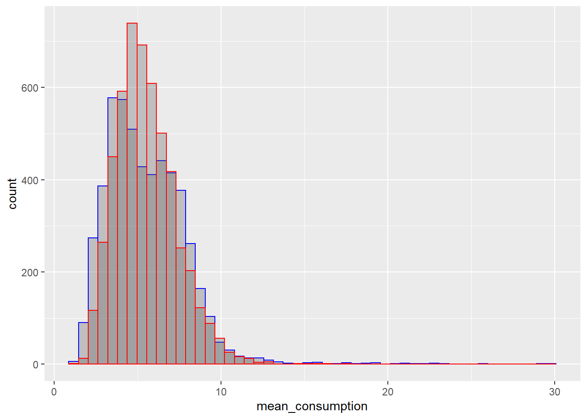

Chapter 6 Finite mixture models
6.1 Principle
The energy signature models only offer a coarse disaggregation of energy use into three components: heating, cooling, and baseline consumption. Furthermore, they rely on very long sampling times and cannot predict sub-daily consumption profiles. Finite Mixture Models (FMM) are one way to take the disaggregation of the baseline energy consumption further. Their most common specific case are the Gaussian Mixture Models (GMM).
Finite mixture models assume that the outcome \(y\) is drawn from one of several distributions, the identity of which is controlled by a categorical mixing distribution. For instance, the mixture of \(K\) normal distributions \(f\) with locations \(\mu_k\) and scales \(\sigma_k\) reads: \[\begin{equation} p(y_i|\lambda, \mu, \sigma) = \sum_{k=1}^K \lambda_k f(y_i|\mu_k,\sigma_k) \tag{6.1} \end{equation}\] where \(\lambda_k\) is the (positive) mixing proportion of the \(k\)th component and \(\sum_{k=1}^K \lambda_k = 1\). The FMM distributes the observed values into a finite number of distributions with probability \(\lambda_k\). The optimal number of components is not always a trivial choice: studies involving GMM often rely on some model selection index, such as the Bayesian Information Criterion (BIC), to guide the choice of the appropriate value for \(K\).
The dependency of observations \(y\) on explanatory variables \(x\) can be included in the FMM, by formulating its parameters \(\left\{ \lambda_k(x), \mu_k(x), \sigma_k(x) \right\}\) as dependent on the given value \(x\) of these regressors. Furthermore, in order to include the effects of different power consumption demand behaviours, the mixture probabilities \(\lambda_k\) can be modelled as dependent on a categorical variable \(z\). Finite Mixture Models thus offer a very high flexibility for attempting to disaggregate and predict energy uses, while including the possible effects of continuous or discrete explanatory variables.
6.2 Tutorial (Rstan)
This example uses a data file provided in the book’s repository. The tutorial below is written in R and uses Stan. Unsurprisingly, the Stan user’s guide also has a chapter on finite mixtures
library(rstan)
library(tidyverse)
df <- read_csv("data/mixture.csv")
summary(df)## mean_consumption ratio_house ratio_apartment
## Min. : 0.770 Min. :0.0000 Min. :0.0000
## 1st Qu.: 3.753 1st Qu.:0.2006 1st Qu.:0.1181
## Median : 5.146 Median :0.6346 Median :0.3654
## Mean : 5.499 Mean :0.5523 Mean :0.4477
## 3rd Qu.: 6.939 3rd Qu.:0.8819 3rd Qu.:0.7994
## Max. :41.805 Max. :1.0000 Max. :1.0000nrow(df)## [1] 20744This data file is an excerpt of an energy consumption census in France. Each row represents an “area” of about 2,000 residents. The available data are the mean residential energy consumption in each area, and the ratios of houses and apartments.
On average, we expect a house to have a higher energy consumption than an apartment: it is larger, has more residents, and more envelope surface with heat loss. Therefore, we can expect areas with more houses to have a higher mean consumption than areas with more apartments.
Let us look at a pairplot of the three features.
library(GGally)
ggpairs(df, columns=c("mean_consumption", "ratio_house", "ratio_apartment"))
There is indeed some correlation between the ratio of houses in each area and the mean consumption. The density of ratio_house is strongly bimodal, and the density of mean_consumption looks like it could be split into two distributions as well.
We can now try to translate our assumptions into a simple mixture of two distributions. Equation (6.1) can be formulated as such: \[\begin{equation} p(y_t | \lambda, \mu, \sigma) = \lambda_t f\left(y_t | \mu_1, \sigma_1 \right) + (1-\lambda_t) f\left(y_t | \mu_2, \sigma_2 \right) \tag{6.2} \end{equation}\] where, for each data point \(t\),
- \(y_t\) is the dependent variable
mean_consumption. - \(\lambda_t\) is the explanatory variable
ratio_house. - \(f\) is a type of continuous probability distribution. It can be Normal, Gamma, LogNormal, etc.
- \(\mu\) and \(\sigma\) are the parameters of the distribution \(f\) that we will choose. The indices \(1\) and \(2\) denote each of the two mixture components.
This is a Stan mixture model with any number K of components:
mixture <- "
data {
// This block declares all data which will be passed to the Stan model.
int<lower=0> N; // number of data items in the training dataset
int<lower=0> K; // number of components
real y[N]; // outcome energy vector
real l[N, K]; // ratios in the training dataset
}
parameters {
// This block declares the parameters of the model.
vector[K] mu;
vector[K] sigma;
}
model {
for (n in 1:N) {
vector[K] lps;
for (k in 1:K) {
lps[k] = log(l[n, k]) + lognormal_lpdf(y[n] | mu[k], sigma[k]);
}
target += log_sum_exp(lps);
}
}
"We can separate the data into a training set and a test set like so. The following block allocates 75% of the data to the training set:
# set.seed(12345) # this is optional but ensures that results are reproducible
train_ind <- sample(seq_len(nrow(df)), size = floor(0.75 * nrow(df)))
train <- df[train_ind, ]
test <- df[-train_ind, ]The next step maps the data to the Stan model and runs the MCMC algorithm.
model_data <- list(
N = nrow(train),
N_test = nrow(test),
K = 2,
y = train$mean_consumption,
l = train %>% select(ratio_house, ratio_apartment)
)
# Fittage
fit1 <- stan(
model_code = mixture, # Stan program
data = model_data, # named list of data
chains = 2, # number of Markov chains. 4 is better, 2 is faster
warmup = 1000, # number of warmup iterations per chain
iter = 4000, # total number of iterations per chain
cores = 2, # number of cores (could use one per chain)
)Let us now display the results of the fitting:
print(fit1, pars=c("mu", "sigma", "lp__"))## Inference for Stan model: 3b97c47b3b8f3bc85f0a82dca510237c.
## 2 chains, each with iter=4000; warmup=1000; thin=1;
## post-warmup draws per chain=3000, total post-warmup draws=6000.
##
## mean se_mean sd 2.5% 25% 50% 75%
## mu[1] 1.90 0.00 0.00 1.90 1.90 1.90 1.91
## mu[2] 1.26 0.00 0.00 1.26 1.26 1.26 1.27
## sigma[1] 0.27 0.00 0.00 0.27 0.27 0.27 0.27
## sigma[2] 0.29 0.00 0.00 0.28 0.29 0.29 0.29
## lp__ -29304.80 0.03 1.43 -29308.46 -29305.46 -29304.50 -29303.75
## 97.5% n_eff Rhat
## mu[1] 1.91 5070 1
## mu[2] 1.27 4316 1
## sigma[1] 0.27 7358 1
## sigma[2] 0.29 6617 1
## lp__ -29303.01 3215 1
##
## Samples were drawn using NUTS(diag_e) at Wed Jul 06 14:36:51 2022.
## For each parameter, n_eff is a crude measure of effective sample size,
## and Rhat is the potential scale reduction factor on split chains (at
## convergence, Rhat=1).traceplot(fit1, pars=c("mu", "sigma", "lp__"))
pairs(fit1, pars=c("mu", "sigma", "lp__"))
It looks like we can be satisfied with the MCMC convergence: n_eff is high enough and Rhat close to 1 for all parameters, and all chains seem stationary. The last step is to predict values of the mean consumption of each area in the test data set. We calculate this prediction from the ratios of houses and apartments, and from the mean estimated values of the distributions in the mixture model.
# Extracting distribution parameters from the fit object
la <- rstan::extract(fit1, permuted = TRUE)
mu <- colMeans(la$mu)
sigma <- colMeans(la$sigma)
# Predict the consumption of the test data from the ratios
test$y <- test$ratio_house * rlnorm(nrow(test), mu[1], sigma[1]) +
test$ratio_apartment * rlnorm(nrow(test), mu[2], sigma[2])
# Plot to compare measured and predicted consumption on the test data
ggplot(data=test) +
geom_histogram(mapping=aes(x=mean_consumption), bins=50, color='blue', alpha=0.3) +
geom_histogram(mapping=aes(x=y), bins=50, color='red', alpha=0.3)